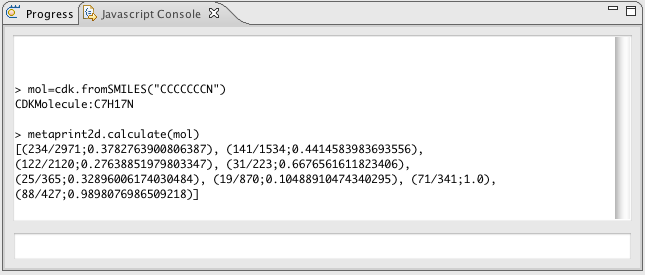
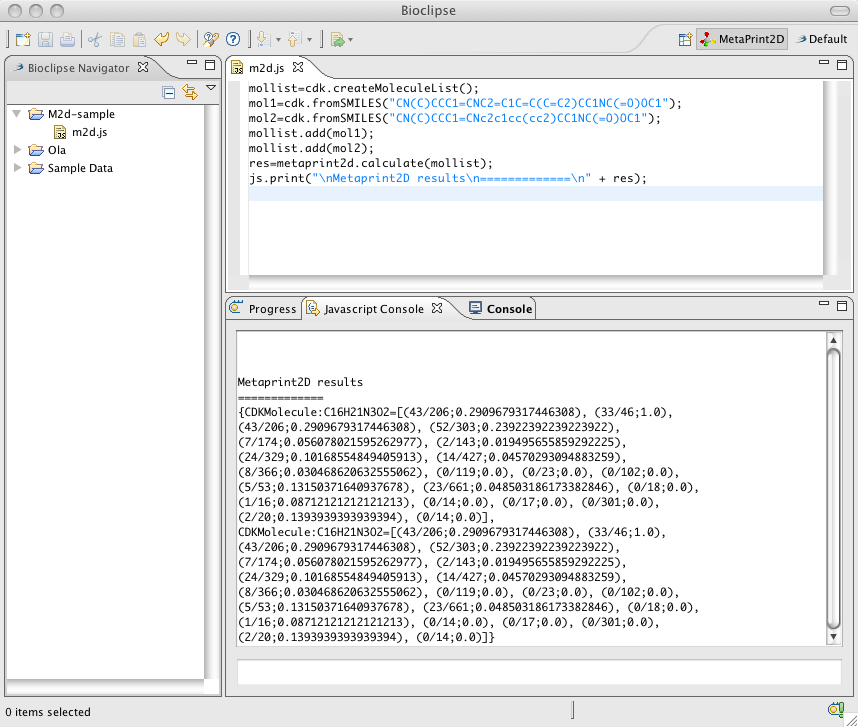

MetaPrint2D - Scripting
Bioclipse is equipped with its own scripting language (based on Javascript)
that can be used to automate tasks.
MetaPrint2D is fully accessible from the scripting environment and can be used in two ways.
Executing individual commands in the JavascriptConsole
Reveal the Javascript console from the main menu: option Window > Show View > other...
and then select Scripting > Javascript Console.
Here you can enter commands like below. Type 'help metaprint2d' to see a list of available MetaPrint2D commands.

Calling MetaPrint2D from within Bioclipse Scripts
You can use MetaPrint2D inside scripts in Bioclipse. Below is an example script that
creates a list of two molecules from SMILES and calculates MetaPrint2D for the two molecules.
The latest version of the script is available as Gist 195398.
